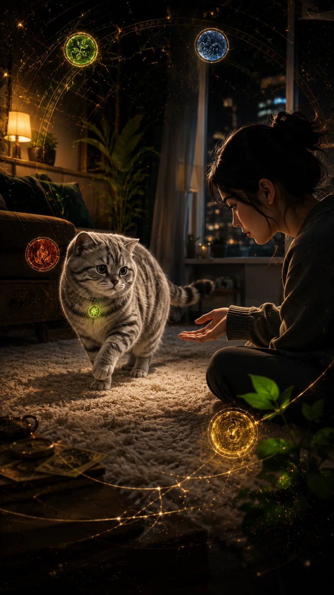
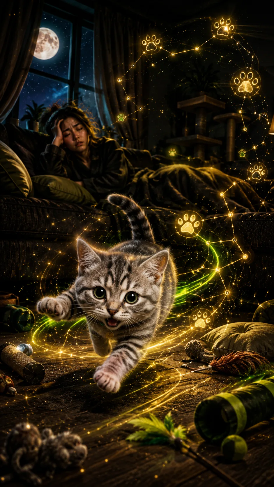
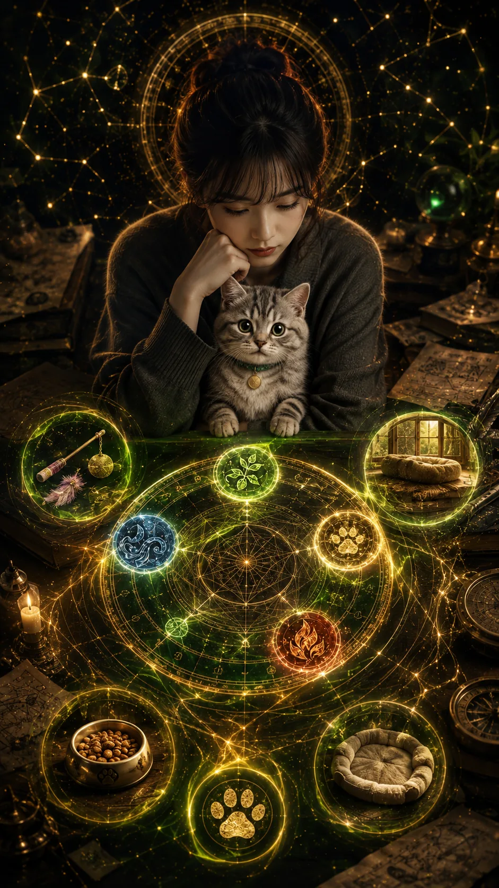
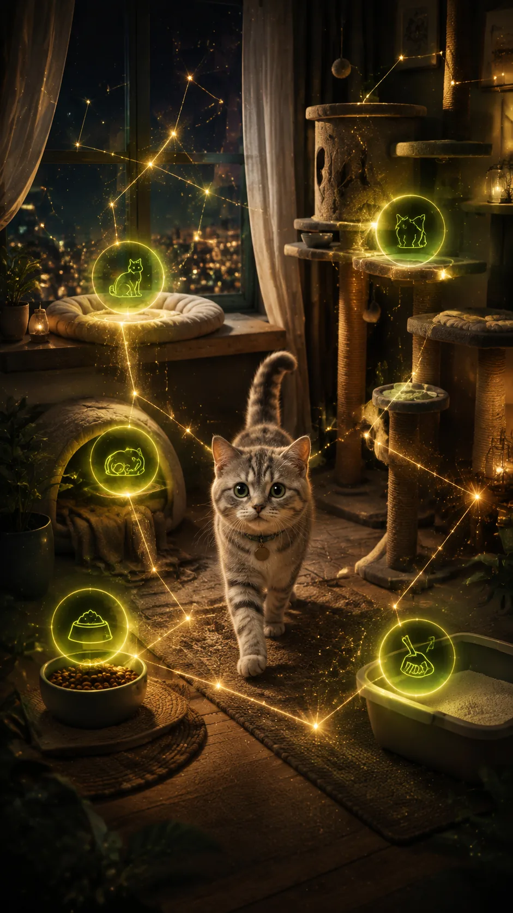
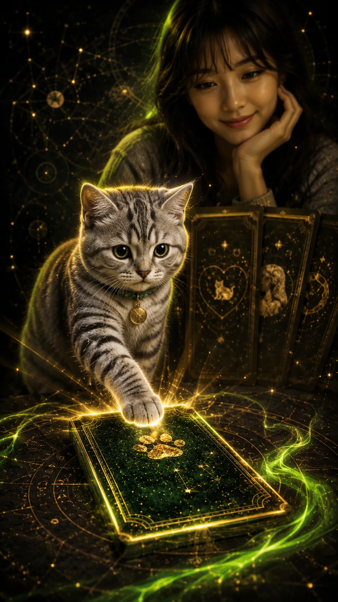
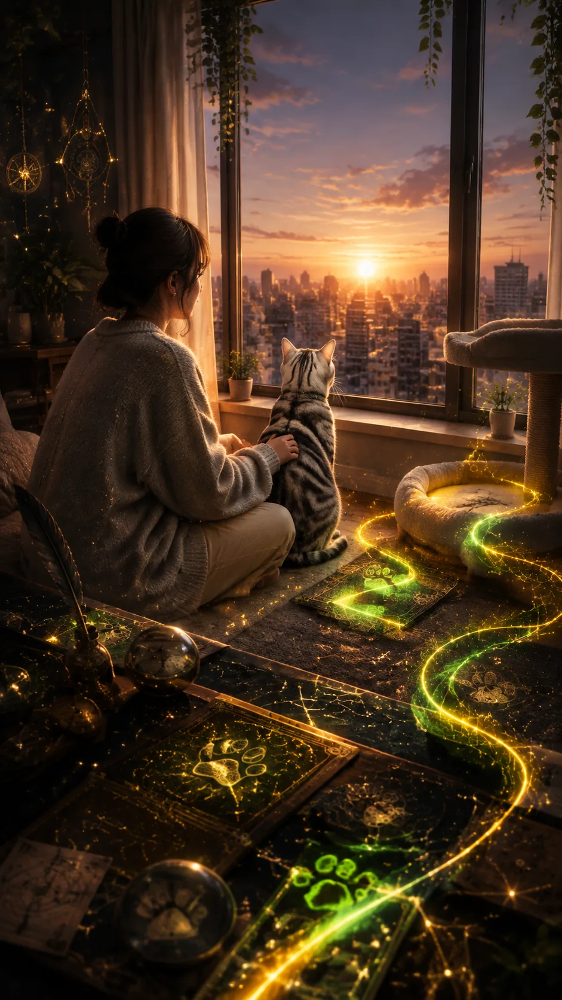

보호자 사주 + 고양이 행동 프로필
내 고양이랑 나, 진짜 궁합 맞아?
내 사주 흐름과 우리 고양이의 행동 태그를 같이 보고, 쓰다듬 거리·루틴·공간 케미를 생활 언어로 풀어봐요.

거리감 궁합
왜 나만 밀당 당하는 느낌이지?
어떤 사람은 애정을 빨리 확인하고 싶고, 어떤 고양이는 편한 거리가 생겨야 다가옵니다. 이 서비스는 집착과 방치 사이의 밸런스를 먼저 봅니다.

생활 루틴 싱크
밤 우다다도 궁합 신호일 수 있어요
밥·간식 리듬, 수면 패턴, 재택과 외출 텐션이 어긋나면 서로 좋아해도 피곤해집니다. 궁합은 점수보다 같이 편해지는 루틴에 가깝습니다.

분석 기준
고양이 사주를 억지로 찍지 않아요
보호자 쪽은 생년월일시로 기본 성향과 에너지 흐름을 보고, 고양이 쪽은 생일을 모르면 행동 문진으로 태그를 잡습니다.

이런 것까지 봅니다
귀여움 말고 같이 사는 디테일

무료 티저와 유료 리포트
무료로는 방향만, 결제 후엔 생활 처방까지
무료 티저는 기본 텐션과 핵심 케어 포인트를 보여줍니다. 9,900원 리포트에서는 거리·루틴·공간·오행 케어·입양과 합사 타이밍까지 이어서 봅니다.

오늘의 냥생 액션
결론은 하나예요. 같이 편해지는 법
지금 입력하면 오늘 손길·말투·놀이 방식부터 확인합니다. 고양이가 나를 싫어하는지보다, 우리 사이가 편해지는 조건을 먼저 봅니다.